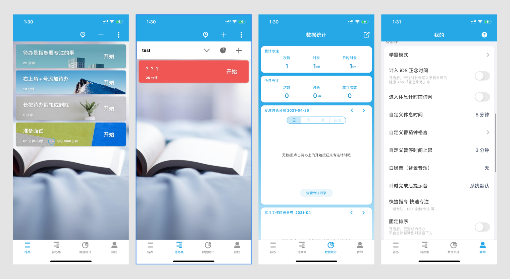

Nowadays, most schools in the US are still providing online courses due to the pandemic. We noticed two major issues that many students have confronted in such study mode. One is the distraction of smartphones. The other is group work coordination. In offline study mode, students are often told to put phones away or mute their phones. Also, in a live lecture, students pay more attention since they will miss important points about the content. However, when classes are online, students have no restrictions on access to their smartphones and they can pause the video at any time they want. This kind of freedom magnifies the distraction of smartphones since there are no monitors and the cost for distraction is so low.
People in unmonitored circumstance are experiencing harder time get rid of the distraction of smartphones. They also experience low motivation for consistant working.
There are already many attention-monitoring apps in the market, however, there is no such a perfect one that exactly solve the pain points of people around me. Let's take a look at the most popular two in the market: "Forest" & "Tomato Todo"
Forest is an app that build around the countdown clock. When users use the app, they are planting a tree. As long as the user keep using the app, they will have their own forest with all kinds of trees.
Unlike Forest, Tomato ToDo has more functions and become predictably more complicated than forest. Unfortunately, Tomato ToDo doesn't have language setting and simplified Chinese is the only language avaliable.
The countdown clock of Tomato ToDo allow users to pause for a period of time (adjustable in settings), keep screen on, background music, and quit. It has more steps to operate incase user want to quit halfway and require user to reflection on the reason. If the deep focusing mode is on, when user leave the screen for too long, there will be a alarm to warn user. This makes the app stronger on monitoring users.
We want the simplicity of Forest, the monitoring power of Tomato ToDo, with the function to facilitate and motivate group working.
In this prototype, we specificly focus on the design of the monitoring system. Ideally, we want the app be able to manage the notification setting of the phone and let users to decide choose which apps to notify them during the focuing time and turn off the rest. We want to implement a function like guided access of iPhone that fix users on the current screen unless they take a break or quit. Correspondingly, we design the break ticket that allow users to choose the number of breaks and the duration of each one to balance work and rest. A todo list is also included incase user need that.
In prototype 2, we focus on the design of the motivation system. We use a concept of a company and users starts from interns and get promoted as they use the app for longer time. We encourage users to invite friends and compete with them and have a ranking system to motivate themselves and increase the frequency of using this app.
We also implement the study group concept in this app, which are basiclly project managers that can assign tasks to members in the group and have them report the progress.
Since all group members locate in different city (even countries), we decided to use zoom to interact virtually with the testers. We made a power slides with every page on its own slide. The tester will tell us which button to click and we will show the corresponding page or popup window. We have 6 people from other groups to test our prototypes Each tester will 'interact' with both prototypes and give us scores based on Jakob Nielsen's 10 general principles for interaction design:
Focus Co. is light weighted, provide just as much as what students need as a focus monitor. It can strictly monitor phone usage during study and also motivate people to stay focus and "earn money".
In our design, users can select apps to receive or block notification during focus time. Although this function is idealized since it will need authorization from the operation system and other apps. However, if this function can be implmented, it would help people better focus on the job while also notified if important information is coming.
In our design, users are only allowed to leave the screen during break time. Early quit will cause half of their effort been taken away. This level of strictness will be useful to help people who want to stay focus but get cannot reject the lure of internet.
The special career promotion system: To better motivate users to use our app, we designed this game system that convert the time they spend focuing to virtual salary under their account. As they earned enough money, they will be promoted to higher position with higher salaries. Users can compete with their friends using the friends system to better motivate themselves.
The most important thing that I learned from this project is Don't be idealized. Before user testing, we all feel good about our prototype and we believe they are easy to understand. It turns out that user may not even get the core concept about some feature in the app. Also, users are more picky than we thought and there is indeed a gap between designers and users. We really need user tests to make sure user understand our design.
Another thing is we cannot be too idealized about the function of an app. For Focus Co., we want it to be able to change notification settings of other apps and fix user on the current screen. Those two features are hardly possible to actually implement. Idea is just idea, Designers need to learn to compromise and give in, either for business value or technique difficulties.
Designed & Made with passion & love by Jack Chen